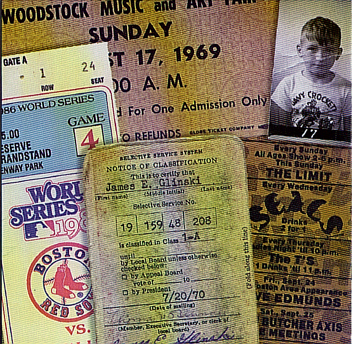

Left Turn on Red is the platform for guitarist and vocalist Jim Glinski to record his original songs as well as some favorite covers. Created in the late 1980s, Left Turn on Red is heavily influenced by the musicians and bands of the 1960s and 1970s, including The Beatles, The Rolling Stones, The Who, The Grateful Dead, The Yardbirds, The Byrds, Tom Petty, The Moody Blues, The Jefferson Airplane, and Neil Young among others. Left Turn on Red is a studio band and has released three CDs: The Mists of Time (1998), Cosmos Café (2003), and most recently, Truth and Consequences (2007).
